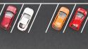
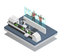
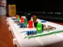

Si no entiendes alguna palabra...
Parking

- Definición
-
Un parking es un espacio (público o privado) donde se aparcan vehículos (generalmente coches), a veces a cambio de una aportación económica, o a veces de forma gratuita.
- Ejemplo
-
El coche se encuentra estacionado en el parking de la estación de tren.
Programación
- Definición
-
Es una técnica que consiste en establecer un conjunto de instrucciones para que se resuelva un determinado problema.
- Ejemplo
-
La programación del microondas no es la adecuada para que caliente la comida.
Simulación

- Definición
-
Es un procedimiento que utilizamos en ciencia e ingeniería para no tener que probar sobre sistemas reales, ahorrando tiempo, materiales y costes económicos.
- Ejemplo
-
He simulado un circuito en serie.
Electrónica

- Definición
-
Es la parte de la Tecnología que estudia los circuitos que utilizan pequeños voltajes y corrientes para su funcionamiento.
- Ejemplo
-
En la actualidad, la electrónica tiene una gran relevancia, porque multitud de dispositivos utilizan componentes que consumen pequeñas corrientes.